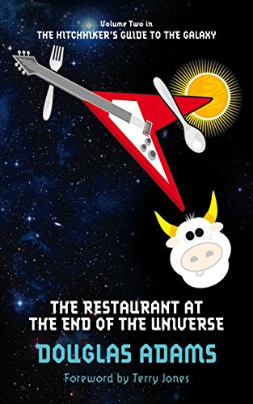

The Restaurant at the End of the Universe (Book 2)
Synopsis
Facing annihilation at the hands of the warlike Vogons is a curious time to have a craving for tea. It could only happen to the cosmically displaced Arthur Dent and his curious comrades in arms as they hurtle across space powered by pure improbability--and desperately in search of a place to eat. Among Arthur's motley shipmates are Ford Prefect, a longtime friend and expert contributor to the Hitchhiker's Guide to the Galaxy; Zaphod Beeblebrox, the three-armed, two-headed ex-president of the galaxy; Tricia McMillan, a fellow Earth refugee who's gone native (her name is Trillian now); and Marvin, the moody android who suffers nothing and no one very gladly. Their destination? The ultimate hot spot for an evening of apocalyptic entertainment and fine dining, where the food (literally) speaks for itself. Will they make it? The answer: hard to say. But bear in mind that the Hitchhiker's Guide deleted the term "Future Perfect" from its pages, since it was discovered not to be!
Download PDF